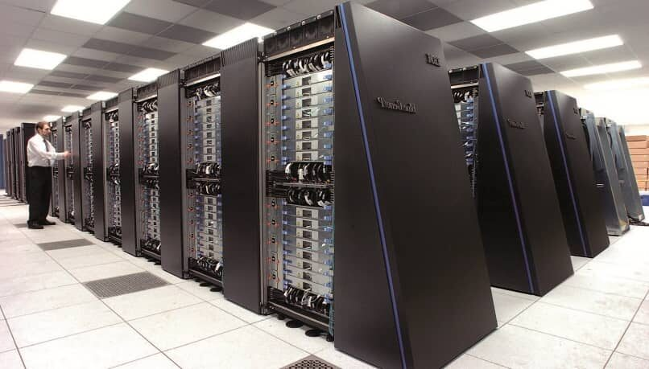
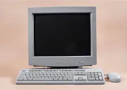
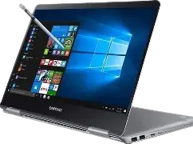
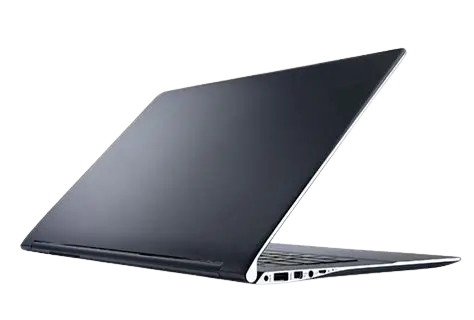
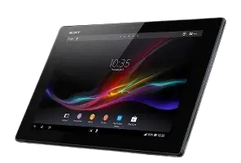

Tipos de Computadoras y Detalles
Según su tamaño y potencia
- Ejemplos: Summit, Fugaku.
Supercomputadoras: Son las computadoras más rápidas y potentes que existen. Pueden procesar miles de millones de instrucciones por segundo. Se usan en investigación científica, simulaciones climáticas, estudios espaciales, modelado de sistemas complejos, entre otros. Son costosas y ocupan grandes espacios físicos con sistemas de enfriamiento avanzados.
- Macrocomputadoras (Mainframes): Computadoras grandes que manejan enormes cantidades de datos y múltiples usuarios simultáneamente. Utilizadas por bancos, gobiernos y compañías aéreas para procesamiento de transacciones y gestión de bases de datos. Son muy confiables y trabajan 24/7.
Ejemplo: IBM Z.
Minicomputadoras: Sistemas intermedios entre mainframes y microcomputadoras. Menos potentes que mainframes pero más que PCs. Usadas en empresas medianas para control de procesos y tareas administrativas. Actualmente, muchos de estos sistemas se han convertido en servidores basados en PC.
Microcomputadoras (PC): Computadoras personales para uso individual, como desktops, laptops y tablets. Son las más comunes en hogares, oficinas y escuelas.
Según su portabilidad
-
 Computadoras de escritorio (Desktop): No portátiles, requieren energía constante. Son potentes, expandibles y usadas para tareas que requieren alto rendimiento.
Computadoras de escritorio (Desktop): No portátiles, requieren energía constante. Son potentes, expandibles y usadas para tareas que requieren alto rendimiento.
 Computadoras portátiles (Laptop, Notebook): Dispositivos móviles con batería integrada, combinan rendimiento y movilidad para estudio, trabajo y entretenimiento.
Computadoras portátiles (Laptop, Notebook): Dispositivos móviles con batería integrada, combinan rendimiento y movilidad para estudio, trabajo y entretenimiento.
Ultrabooks: Laptops delgadas, ligeras, con gran autonomía, ideales para profesionales que viajan mucho.
 Netbooks: Pequeñas, económicas y diseñadas para tareas básicas como navegar y procesar textos. Han sido en gran parte reemplazadas por tablets.
Netbooks: Pequeñas, económicas y diseñadas para tareas básicas como navegar y procesar textos. Han sido en gran parte reemplazadas por tablets.
Tablets: Dispositivos con pantalla táctil, sin teclado físico o con teclado opcional, usados para consumo de contenido, educación y arte digital.
 2 en 1 o convertibles: Combinan características de laptop y tablet. Teclado desmontable o plegable. Ejemplo: Microsoft Surface Pro.
2 en 1 o convertibles: Combinan características de laptop y tablet. Teclado desmontable o plegable. Ejemplo: Microsoft Surface Pro.Según su uso
-
 Estaciones de trabajo (Workstations): Equipos de gama alta para profesionales de diseño, animación, edición y análisis de datos. Tienen procesadores potentes, mucha memoria RAM y tarjetas gráficas especializadas.
Estaciones de trabajo (Workstations): Equipos de gama alta para profesionales de diseño, animación, edición y análisis de datos. Tienen procesadores potentes, mucha memoria RAM y tarjetas gráficas especializadas.
 Servidores: Computadoras dedicadas a proveer servicios a otras computadoras dentro de una red, como almacenamiento, hosting web y bases de datos. Funcionan de manera continua y manejan múltiples solicitudes.
Servidores: Computadoras dedicadas a proveer servicios a otras computadoras dentro de una red, como almacenamiento, hosting web y bases de datos. Funcionan de manera continua y manejan múltiples solicitudes.
 Computadoras embebidas: Sistemas integrados en otros dispositivos para controlar funciones específicas sin interacción directa con el usuario. Se encuentran en autos, electrodomésticos, robots, etc.
Computadoras embebidas: Sistemas integrados en otros dispositivos para controlar funciones específicas sin interacción directa con el usuario. Se encuentran en autos, electrodomésticos, robots, etc.Resumen de Tipos de Computadoras
Tipo Características principales Ejemplos / Uso Supercomputadoras Máxima potencia y velocidad. Procesan datos complejos y masivos. Investigación científica, simulaciones. Mainframes Manejo de grandes datos y múltiples usuarios. Alta confiabilidad. Bancos, gobiernos. Minicomputadoras Potencia media entre mainframes y PCs. Empresas medianas, control industrial. Microcomputadoras (PC) Uso personal, accesibles y versátiles. Hogares, oficinas, escuelas. Desktop No portátil, potente y expandible. Trabajo de oficina, gaming. Laptop Portátil, con batería integrada. Estudio, trabajo, movilidad. Ultrabook Delgada, ligera, larga duración de batería. Profesionales viajeros. Netbook Pequeña, económica, para tareas básicas. Navegación y documentos simples. Tablet Pantalla táctil, sin teclado o con teclado opcional. Consumo multimedia, educación. 2 en 1 / Convertible Híbrido tablet-laptop con teclado desmontable. Versatilidad, creatividad. Workstation Alto rendimiento para aplicaciones profesionales. Diseño, animación, simulaciones. Servidor Provee servicios a otras computadoras en red. Hosting, almacenamiento, bases de datos. Computadora embebida Sistemas integrados para control específico. Autos, electrodomésticos, IoT.